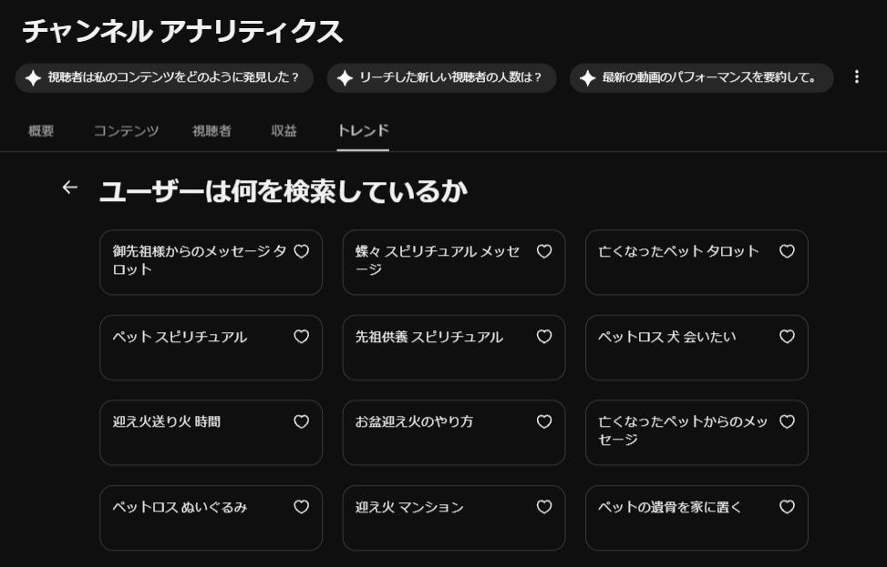
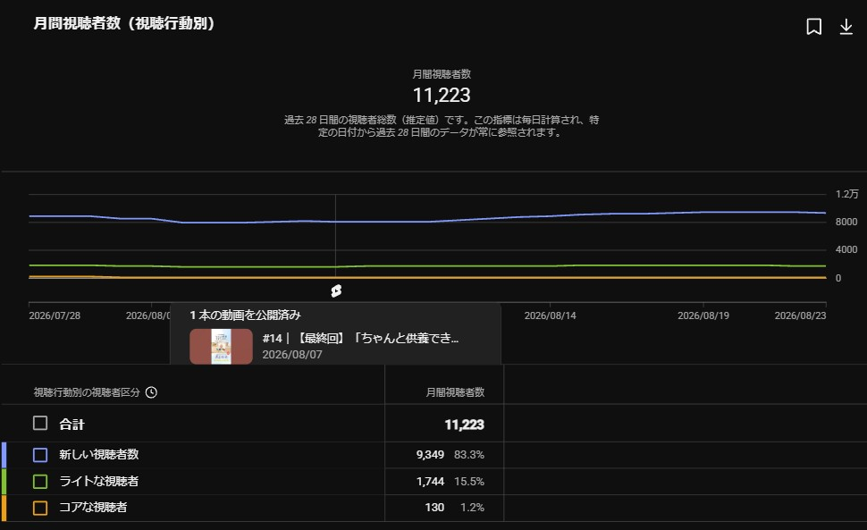

コラム動画制作プロジェクト
マルチチャネル情報発信2026.5～2026.8
実際の動画（全14回）はこちら
※外部URL（YouTube再生リスト https://www.youtube.com/playlist?list=PLLWLyvZB1eUk）にジャンプします。
概要
- LINEで実施したユーザーアンケートから、ターゲットである40〜60代女性の方々にとって、長文のコラムよりも短い動画の方が気軽に見てもらえるのではないかという仮説を持ちました。
- 販売期・繁忙期にあたる夏の4か月間は、継続的に接触を持つことが大事であると考え、販売企画のひとつとして、週1本のショート動画制作・投稿に取り組みました。
- YouTubeを主体とし、SNS（インスタ・X）、TikTok、EC内の企画ページ、LINEなど、マルチチャネルで動画を作ったその後の発信も行いました。
アクション
■企画から編集まで、ほぼ一人で
- 企画・撮影・編集・台本を一貫して担当しました。
- 積み重なった投稿動画の反応をAIに分析させ、一部のテロップ、キャッチコピーの提案を受けました。
■多角的な工夫
- 全14回分の構成をあらかじめ用意していましたが、実際に配信してみると、再生数が伸びなかった回やSNSでのコメント、さらに「商品の訴求をもう少し強めたい」という事業側の声もあり、内容は柔軟に調整／変更しながら進めました。
- YouTubeを主軸に、Instagram・X・TikTok・EC内特設ページ・LINEなど複数のチャネルで配信。
配信時間帯のA/Bテストを行って最適化したり、途中から読み上げ音声を加えてより見やすくするなど、細かな調整を積み重ねました。

図）スピリチュアル分野の流入ワードが、想定および事前調査以上に強力であったため、途中「実際的なノウハウ」の投稿回を、一度「あの子は見ていてくれる」系の内容に寄せて実験しました。
成果
全14回配信（2026/5/1〜8/7）にて、
-
チャンネル登録者+177（過去90日比+13%）
- 視聴回数83,199（同+18%）
- YouTube経由のECサイトトラフィック+19.13%、回遊率+30.63%
- 新規視聴者比率83.3%・・・認知拡大に寄与。

図）2026年8月の月次パフォーマンス所感
事前に決めた企画をそのまま完遂するより、反応を見ながら柔軟に軌道修正していくことの方が、結果的に成果につながることを実感した取り組みでした。
継続的な接触という当初の目的と、事業側の売上への期待とのバランスを取ることが、実務上いちばん難しく、そして工夫のしがいがある部分でした。